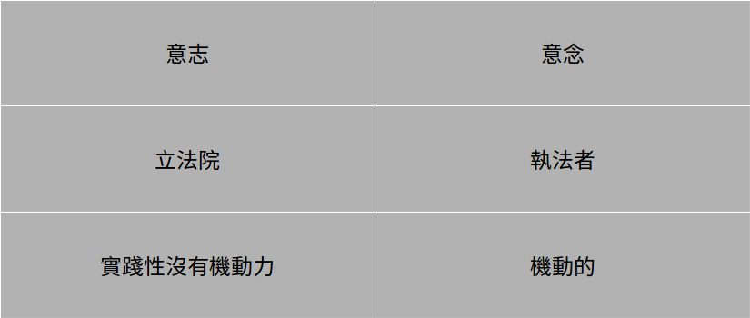

法政哲學報告
第四組
關於康德
* 兩大革命的理論基礎
* 道德的形上學
康德簡介
啟蒙運動
1. 相信理性並敢於求知，認為科學和藝術的知識的理性發展可以改進人類生活
2. 批判傳統
 康德
1. 人具有理性能力因此有尊嚴
2. 人本身是目的
康德
1. 人具有理性能力因此有尊嚴
2. 人本身是目的
* 道德形上學基礎
1. 什麼是道德最高原則?
* 純粹實踐理性
2. 什麼是自由?
正義思考
1. 功利主義
2. 正義+ 自由 (自由至上是其中之一)
3. 看道義應得
康德的道德哲學
康德想要提出一個舉諸四海而皆準的判斷依據。根據這個格準，所有的理性人都必須遵守它的規定。康德運用這個格準來解決道德爭議，並稱之為無上命令(categorical imperatives)
康德的道德觀
康德認為當一個人論及道德時, 一定要先肯定有自由, 若無自由, 道德便不可能。自由是道德的要素, 意志自由是以理性為基礎, 凡有理性者, 必然有自由。意志的自由與自為立法是“自律的”, 彼此是交互的觀念。自由與個人的利益無關, 唯一的利益是自由行動的理性利益, 而理性是普遍的, 自由是脫離感官誘惑的獨立抉擇, 也是對義務的接受。
康德的自由主義

自律
義務vs喜好:
* 何謂義務: 善意志，出於對的理由而去做對的事
* 何謂喜好: 為了滿足需求、欲望、喜好、利己
問題討論
* 是否贊成安樂死
* 是否贊成代理孕母